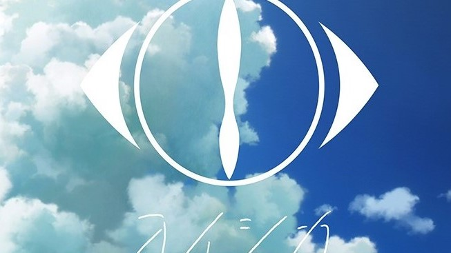

樂團介紹:ヨルシカ

- 簡介
- Yorushika（日語：ヨルシカ Yorushika）是由作曲家n-buna與歌手Suis組成的日本搖滾樂團。 該樂團於2017年建成，樂隊出道時所屬的音樂廠牌為Dwango 旗下的 U&R records。2019年6月14 日以單曲《心上破了洞》（心に穴が空いた）自日本環球音樂主流出道。
- 透明感的歌聲與故事性強烈的歌詞
- Yorushika的成員包括n-buna與suis。是由以往主要製作Vocaloid曲為主的n-buna和參與歌手Suis在2017年組成的樂隊。 因為「不希望為音樂帶來先入為主的偏見」，所以關於這兩人的官方消息除上述外別無其他，至今仍未公布兩人的樣貌等相關資料。 「Yorushika」（夜しか）這個名字取自於第一張迷你專輯《夏草使人厭煩》中最後一首歌《雲和幽靈》的歌詞：只有夜晚才能入眠 （夜しかもう眠れずに）。N-buna自己認為「確切地來說Yorushika和一般的樂隊不太一樣」，在樂隊性質的基礎上，可以說「Yorushika」 本身就是一件作品。作為VOCALOID創作者的n-buna創建這個樂隊的期望之一，是為了表現有別於機器音源的人類聲音的特色。
- 成名曲
- 言って(說吧)
| 言って | ||
| 作詞：n-buna | ||
| 作曲：n-buna | ||
| 編曲：n-buna | ||
| 歌：suis |